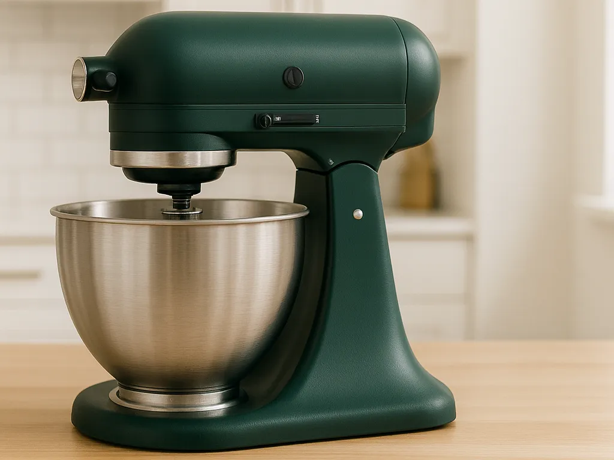
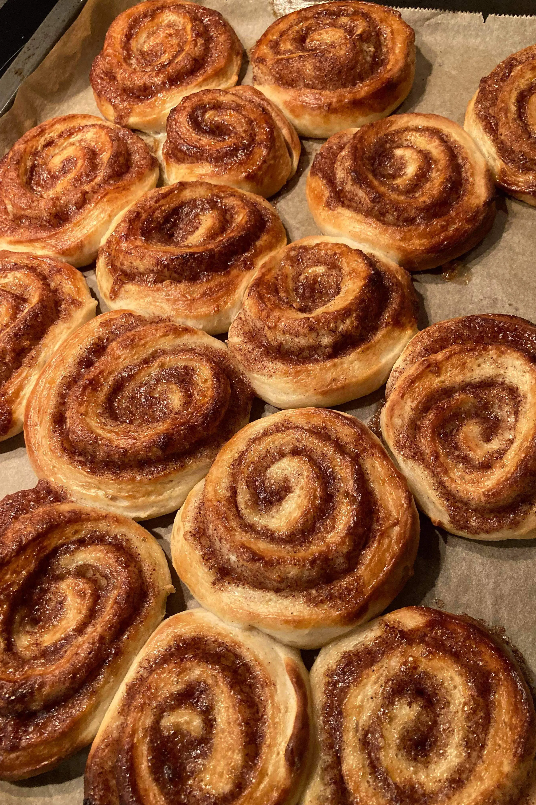
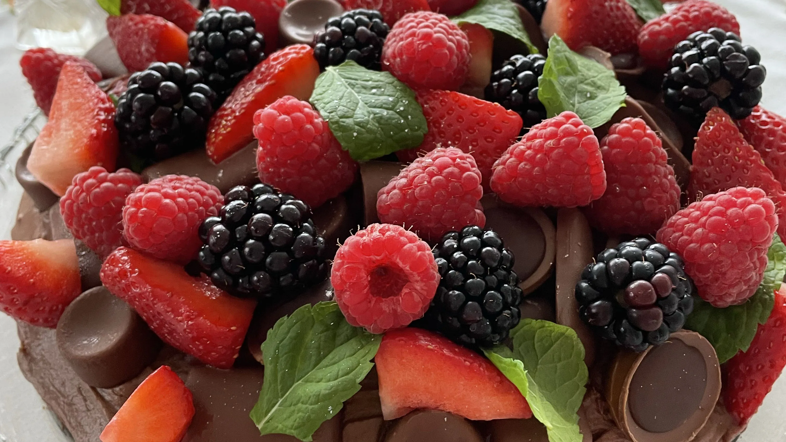
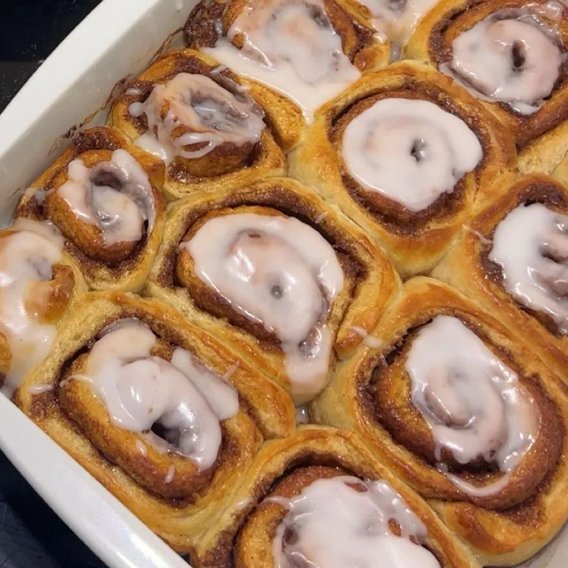
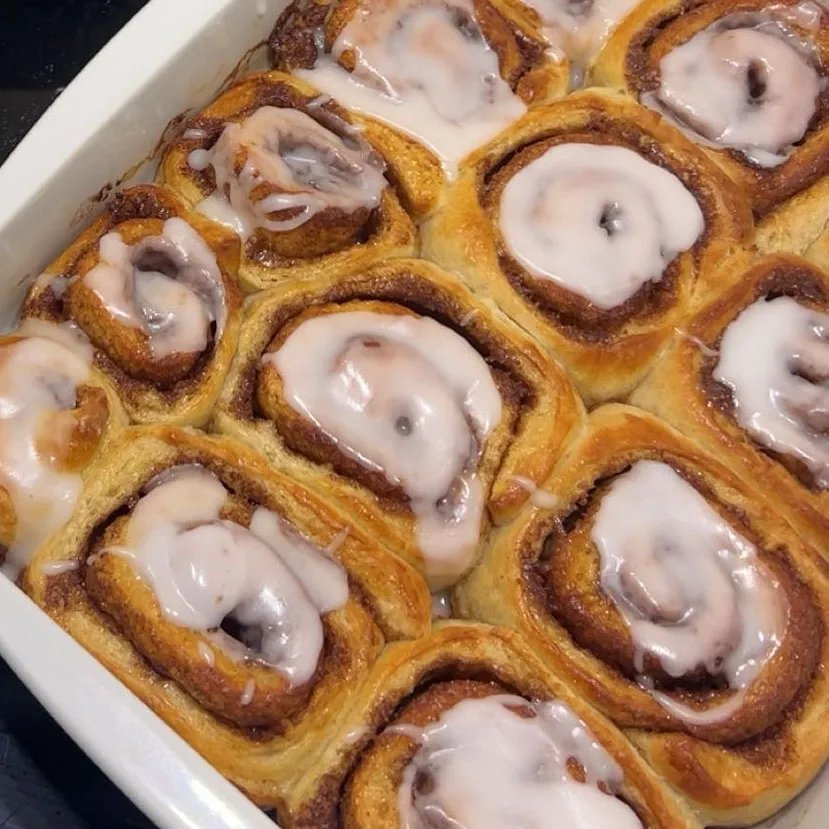
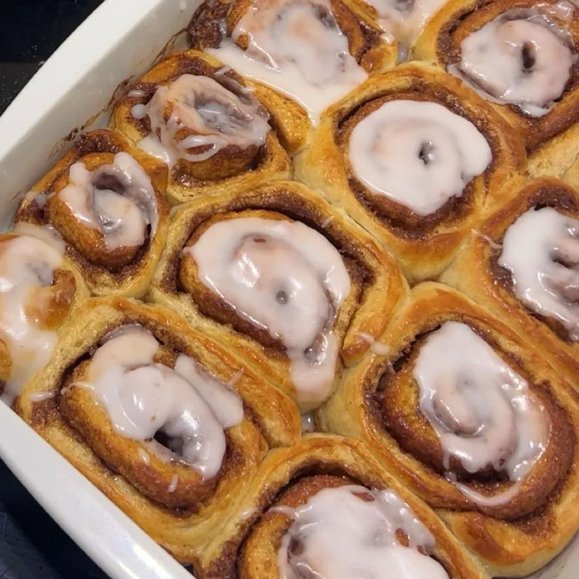

Bagesiden
Gode ting at have
De rigtige bageremedier gør en større forskel, end man tror. Et godt redskab giver bedre kontrol over både dej, konsistens og temperatur, og gør arbejdet langt lettere. Når udstyret fungerer, kan du fokusere på selve processen og glæden ved at bage — og resultatet bliver både mere præcist og mere vellykket.

Det rette udstyr gør hele forskellen
Mit hjemmebag


 

